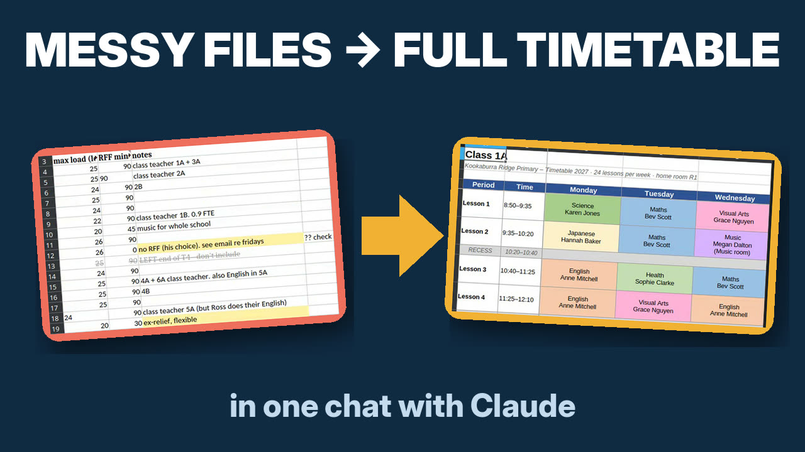

How to make a school timetable with Claude

This guide follows the 3½-minute video:
a fictional school, five messy files and one real run in Claude.
What Claude does, and what the engine does
Claude is very good at reading untidy files: a staff list with notes in the margins, a curriculum spreadsheet with blank cells, an email from the principal. What no chatbot can do on its own is check that ten classes, fifteen teachers and a shared sports hall fit together without a single clash. School Timetable Builder is a connector that gives Claude a real timetabling engine for that part. Claude collects and tidies your data, the engine calculates the timetable, and every rule you give is kept.
What you need
- A Claude account. The free plan is enough.
- The files you already have: staff list, subject hours, bell times, rooms, notes. They do not need to be tidy.
Step 1: Find the connector
In Claude, open Customize → Connectors and search for "School Timetable Builder".

Step 2: Click "Connect to Claude"
Open School Timetable Builder and click Connect to Claude. No account, login or API key is needed.

https://timetable-builder.wilbek.workers.dev/mcp. This
also works on the free plan, which allows one custom connector.
Step 3: Check it is switched on
Start a new chat, click + → Connectors and make sure School Timetable Builder is switched on.

Step 4: Drop in your files and say what you want
Drag in everything you have and write what you want in your own words and your own language, for example "I need next school year's timetable. Everything I have is in these files. Can you make it as a colour-coded spreadsheet with one sheet per class and one per teacher?"

No files of your own yet? Try it with our messy sample school (5 files).
Step 5: Allow the connector
The first time, Claude asks before it uses the service. Click Allow (or Always allow).

Step 6: Answer the few questions Claude cannot work out
Claude reads every file and only asks about what is missing or unclear, such as a teacher who is unavailable on Friday afternoons. You can use names, initials or your school's staff codes. Before anything is sent, every teacher is replaced with a code (T01, T02, …). The engine never sees a name.

Claude then checks the data for free. If something cannot work, for example a teacher with more lessons than time available, it tells you before the timetable is made.
Step 7: Get the timetable
Calculating takes about 5–8 minutes. You get a spreadsheet with one sheet per class and one per teacher, with your names, initials or codes back in, and every rule you gave is kept.


Also download the "School data" file. Attach it in a new chat next time and say what has changed. Our service deletes everything within 24 hours, so your downloaded files are your only copy.
Using ChatGPT instead?
The app is also in ChatGPT's plugin directory, and it works on the free ChatGPT plan. See the ChatGPT guide.
What the engine can and cannot do
It handles 5-day weeks with 1–12 lessons a day, teacher availability, workload and part-time, planning time with no gaps, double lessons, daily limits per subject, fixed teachers, shared rooms and classes taught at the same time. It does not handle "if possible" wishes weighed against each other, whole-day events or student-choice courses. Full list.